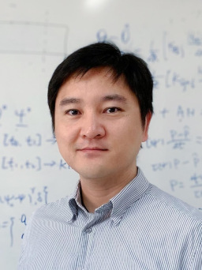

HU Guanghui Curriculum Vitae
Associate Professor
State Key Laboratory of Internet of Things for Smart City
Department of Mathematics, Faculty of Science and Technology, University of Macau
Email: garyhu at um.edu.mo
Office No.: +853 88228544, Fax: +853 88222426
Official Webpage: https://www.fst.um.edu.mo/people/garyhu
Mail: E11-3070, University of Macau, Avenida da Universidade, Taipa, Macao SAR, China.

Education
- Ph.D, Department of Mathematics, Hong Kong Baptist University, 2010
- M.Sc, School of Mathematics, Sichuan University, 2006
- B.Sc, School of Mathematics, Sichuan University, 2003
Work Experience
- Associate Professor, Department of Mathematics, University of Macau, August 2018 - present
- Assistant Professor, Department of Mathematics, University of Macau, August 2012 - August 2018
- Postdoc, Department of Mathematics, Michigan State University, January 2010 - August 2012
Teaching
- Coming 2025 Spring Semester: MATH2004 Mathematical Analysis II
- Taught (Undergraduate): Mathematical analysis series • Advanced mathematics series • Partial differential equations • Numerical analysis • Mathematical Modeling • Introduction to Scientific Computing • Calculus (Michigan State U.)
- Taught (Postgraduate): Partial differential equations • Numerical methods for differential equations • Advanced engineering mathematics
Research Interests Publications -- Software
- I am interested in numerical methods for partial differential equations, including the design and analysis of numerical methods, efficient implementation of algorithms, as well as applications of methods in computational physics such as computational fluid dynamics, electronic structure calculations, computational micromagnetics.
- I am also interested in developing numerical software, for both scientific research and engineering applications.